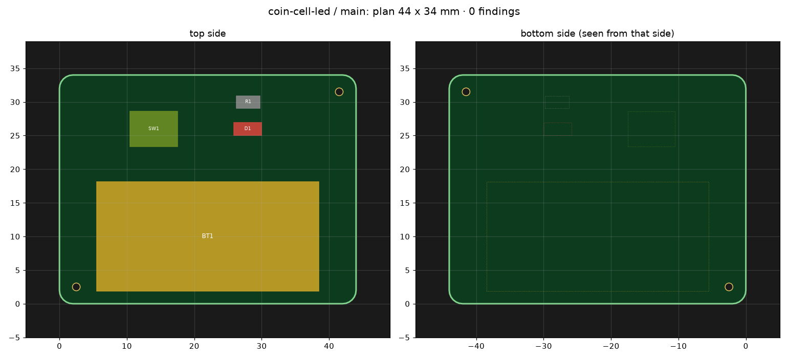

Layout example
8 Have it reviewed
Claude
Two reviewers check it now, each in a session of its own. The regulatory review is support, not legal advice.
You, outside the chat
Start each reviewer in a new session when Claude asks.
ran electrical-reviewer: 5 notes · regulatory-reviewer: 4 notes, none blocking
Two notes need you, the rest Claude fixed2 questions
Who uses the board? The cell comes out by hand, and a swallowed coin cell burns.
- Adults at a desk, out of reach of small children (recommended).
- Children: then a holder that needs a tool.
Adults at a desk
R-2, dark while nobody presses, has no number. At most 1 µA from the cell?
yes
9 Lay out the board
Claude
The board's size and shape? And what must stay where a person touches or looks?
You
Round, please.
Claude
Ø 44 mm. The cell nearly in the middle, 10 mm above it to lever it out. Button, LED and resistor below.

You, outside the chat
In EasyEDA: Design → Import Changes, once, when Claude says so.